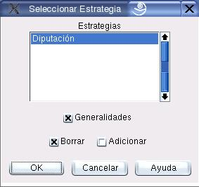

Copiar Variables de una Metodología
Con esta opción el usuario puede copiar todas las variables que están definidas en una determinada metodología. La figura 5.2 muestra el cuadro de diálogo. Para acceder a él se deben seleccionar las opciones del Menú:
Proyecto  Caso Copiar
Caso Copiar
Los principales componentes de este cuadro de diálogo se explican a continuación:
- Metodologías:
- El usuario debe seleccionar de este listado aquella metodología cuyas variables serán copiadas al caso.
- Generalidades:
- Si se activa esta opción se copiaran tambien al caso las generalidades (propiedades genéricas) definidas en la metodología.
- Borrar/Adicionar:
- Estas opciones son mutuamente excluyentes. Borrar elimina las variables definidas en el caso antes de copiar las variables de la metodología, mientras que Adicionar no lo hace.
Figura 5.2:
Diálogo para selección de metodología
|

|
Oscar Duarte
2005-10-17